GoRide is an advanced and scalable taxi booking application designed with secure, modern technologies:
The online cab booking service providers care the price of travelling based on the distance of travel trip and type of car, traffic, and waiting prices. There are numerous apps available in the android play store and apple app store for cab booking in India. Selecting the greatest taxi booking apps in India is tough, which may vary from town to town.
Ensure your system meets the minimum requirements for Flutter development. Flutter supports development on Windows, macOS, and Linux. Make sure your system has the necessary hardware and software requirements as specified by Flutter documentation.
Download the Flutter SDK from the official Flutter website.
Extract the downloaded file to a location on your system. For example, on macOS or Linux, you can
extract it to /usr/local and on Windows to C:\.
Add the Flutter bin directory to your system PATH to run Flutter commands from the
command line. This step is important for executing Flutter commands globally in your system.
For Android: Install Android Studio and configure the Flutter plugin. Android Studio provides the Android SDK, which Flutter uses to develop for Android. Ensure you have the Android SDK and the necessary tools installed through Android Studio.
For iOS: You need a macOS system with Xcode installed to develop and deploy Flutter apps for iOS.
For Android development, set up an Android Virtual Device (AVD) using Android Studio's AVD Manager.
For iOS development, use the iOS Simulator provided by Xcode.
Run flutter doctor:
Open a terminal and run flutter doctor. This command checks your system for any
dependencies needed for Flutter development.
It will provide feedback on any missing or outdated components and instructions on how to resolve them.
If you’re using VS Code, install the Flutter and Dart plugins to enhance your development experience.
Android Studio also has built-in support for Flutter, but make sure to install the Flutter plugin if it’s not already installed.
Use the flutter create command to create a new Flutter project.
Navigate to the project directory and explore the file structure. You’ll find the main Dart file
(main.dart) in the lib directory, where you’ll write your Flutter code.
Connect a device or start an emulator/simulator.
Navigate to your Flutter project directory in the terminal and run flutter run.
This will compile your Flutter app and launch it on the connected device or
emulator.
Once your app is running, you can start developing your Flutter UI and logic. Flutter’s hot reload feature allows you to see your changes instantly without restarting the app.
Flutter has an extensive set of widgets and libraries. Explore the official Flutter documentation and community resources to learn more about Flutter development.
Navigate to the android directory within your Flutter project.
Open the AndroidManifest.xml file located in the app/src/main directory.
File Location: "project/android/app/src/main/AndroidManifest.xml"
Find the package attribute in the tag and change its value to your desired
package name.
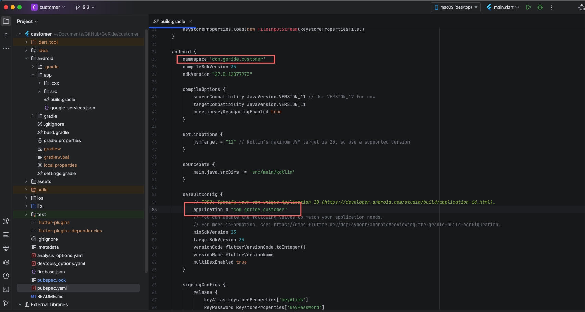
Open the MainActivity.java file located in
android/app/src/main/java/com/your_old_package_name.
Replace occurrences of the old package name with the new package name.
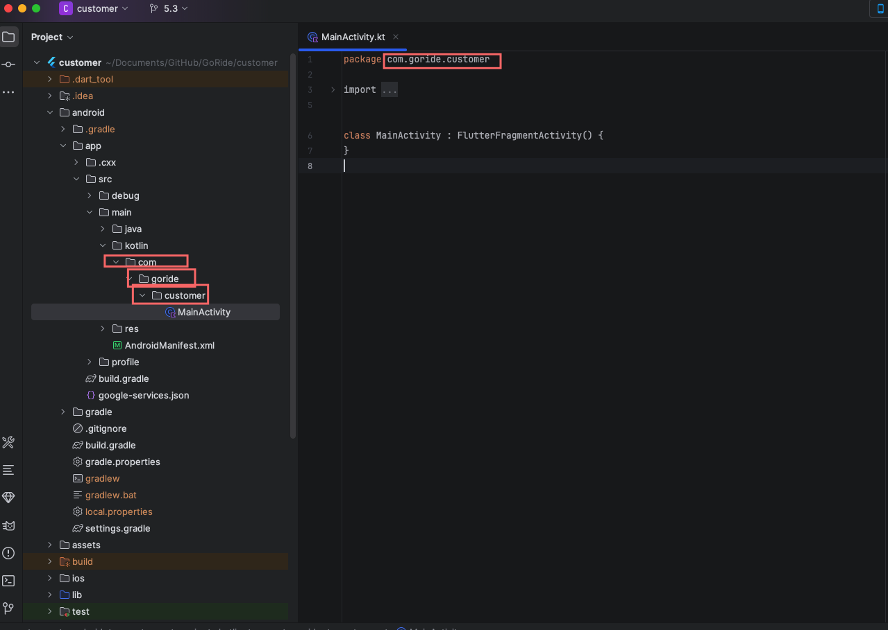
First, prepare the new launcher icon images in the required sizes. Android and iOS have different size requirements. You typically need icons in various sizes to support different screen densities.
For Android, you need to replace the existing launcher icon files with your new ones. The launcher
icons for Android are stored in the mipmap folders inside the android/app/src/main/res
directory.
Replace the existing icon files (ic_launcher.png) in the mipmap folders with your new
icon files. Make sure to maintain the same file names and sizes.
You may need to replace icons in various drawable folders for different screen densities
(e.g., mipmap-hdpi, mipmap-mdpi, mipmap-xhdpi, mipmap-xxhdpi, mipmap-xxxhdpi).
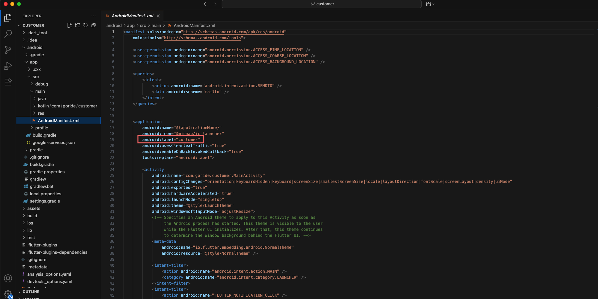
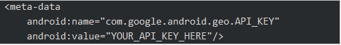
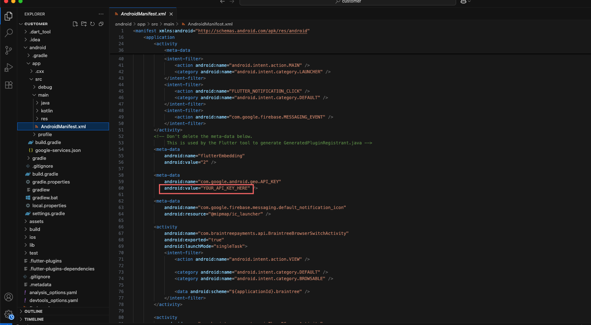
keytool -genkey -v -keystore ~/my-release-key.jks -keyalg RSA -keysize 2048 -validity 10000 -alias my-key-alias
storePassword=your-store-password
keyPassword=your-key-password
keyAlias=my-key-alias
storeFile=/Users/yourusername/my-release-key.jks
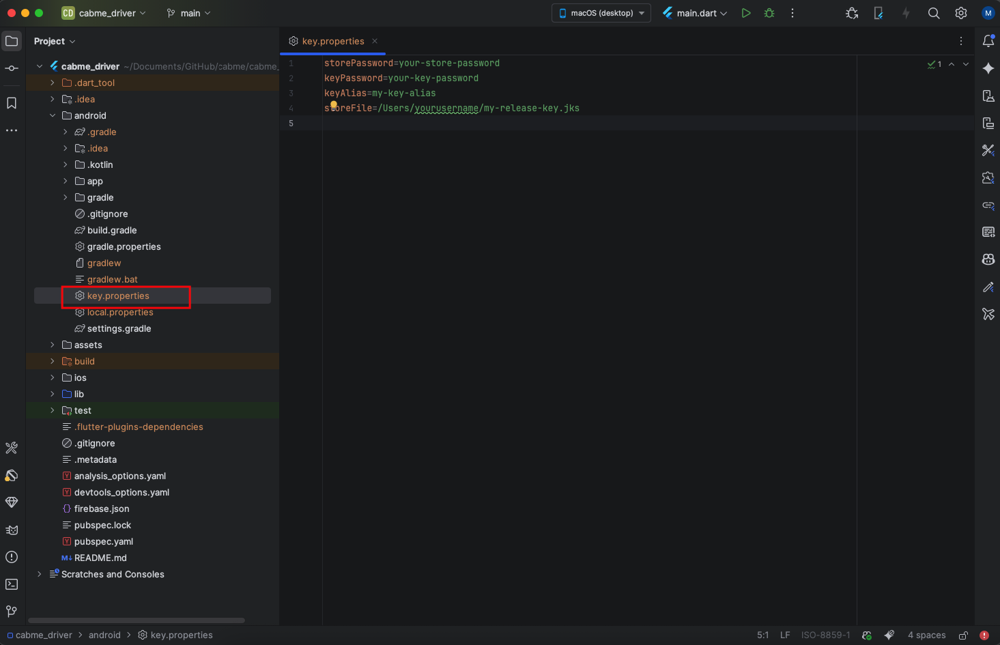
keytool -list -v -keystore path-to-your-keystore-file -alias your-alias-name
path-to-your-keystore-file with the path to your keystore file (usually
debug.keystore for debug builds and a custom keystore for release builds) and
your-alias-name with the alias name used to generate the keystore.keytool -list -v -keystore path-to-your-keystore-file -alias your-alias-name -storetype PKCS12 -keyalg RSA
app -> Gradle Scripts -> build.gradle (Module: app).android block
android {
signingConfigs {
debug {
storeFile file('path-to-debug.keystore')
storePassword 'password'
keyAlias 'key-alias'
keyPassword 'password'
}
}
}
./gradlew signingReport
Click on the Android icon to add an Android app.
Follow the setup instructions, including
adding the google-services.json file to your Flutter project's
android/app directory.
During setup, you'll be asked for your SHA-1 key. Paste the SHA-1 key you generated earlier.
After setup is complete, you'll have the option to download the google-services.json file again. Replace the existing file in your project if needed.
Click on the iOS icon to add an iOS app.
Follow the setup instructions, including downloading the GoogleService-Info.plist
file.
There's no need to add SHA-1 or SHA-256 keys for iOS. Add the downloaded
GoogleService-Info.plist file to your Flutter project's ios/Runner
directory.
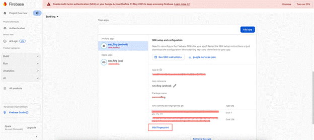
Navigate to the ios directory within your Flutter project.
Open the Runner.xcodeproj project file using Xcode.
In Xcode, select the Runner project from the project navigator.
Go to the Runner target's settings.
Under the General tab, find the Bundle Identifier field and change it to
your desired bundle identifier.
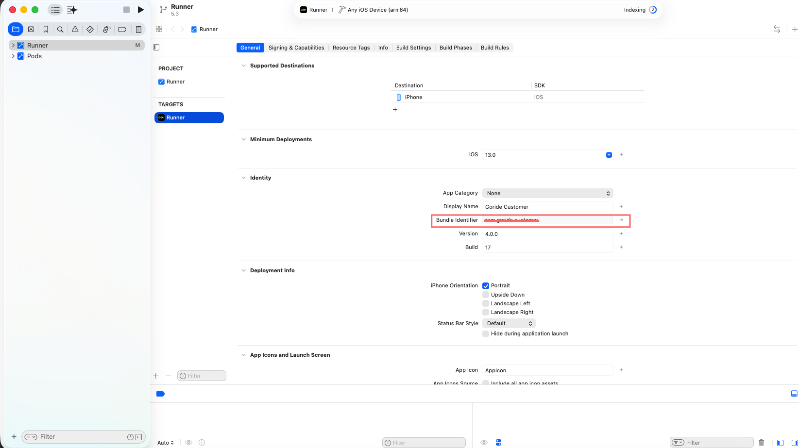
Assets.xcassets directory in the ios/Runner directory.
ios directory and opening
the .xcworkspace file with Xcode.Runner > Assets.xcassets.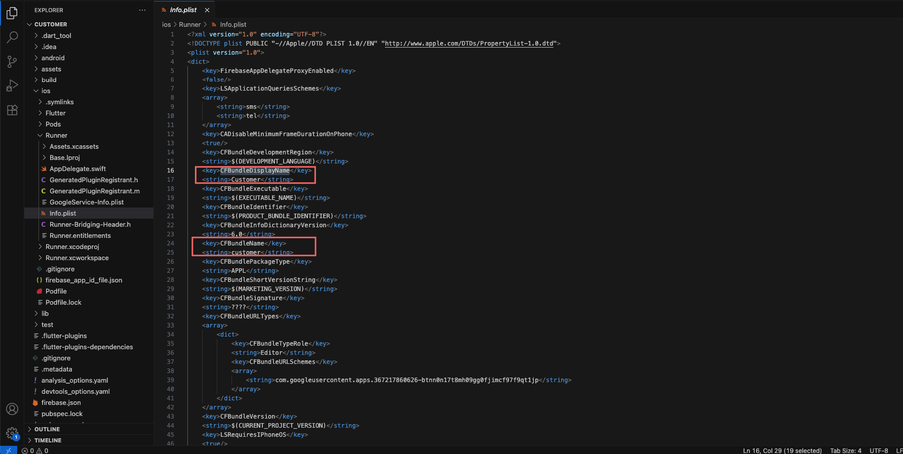
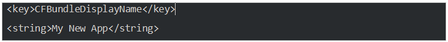
import UIKit
import Flutter
import GoogleMaps // Import GoogleMaps framework
@UIApplicationMain
@objc class AppDelegate: FlutterAppDelegate {
override func application(
_ application: UIApplication,
didFinishLaunchingWithOptions launchOptions: [UIApplication.LaunchOptionsKey: Any]?
) -> Bool {
// Add your Google Maps API key here
GMSServices.provideAPIKey("YOUR_API_KEY_HERE")
// Rest of your code...
return super.application(application, didFinishLaunchingWithOptions: launchOptions)
}
}
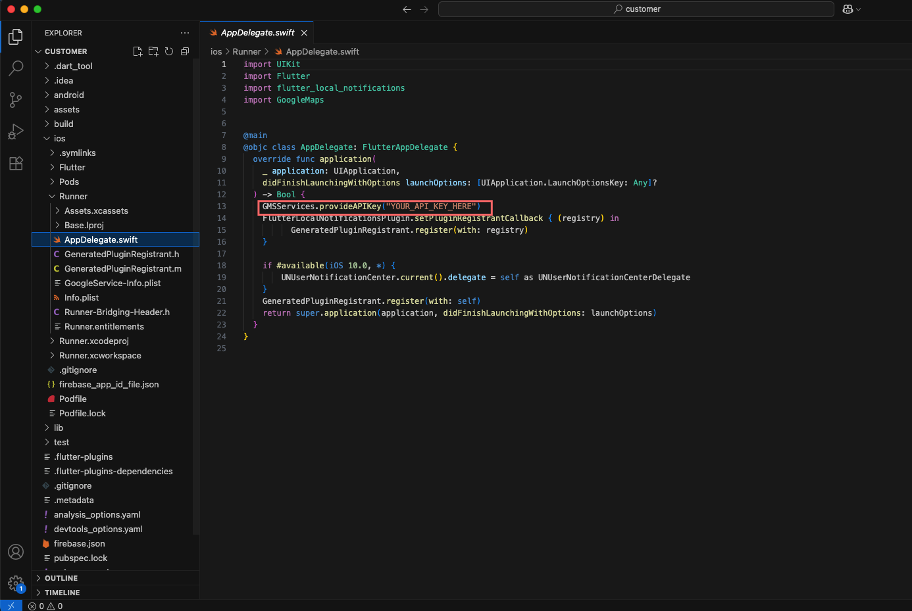
First, you need to install the Firebase CLI if you haven't already. You can install it via npm (Node Package Manager) by running the following command in your terminal or command prompt:
npm install -g firebase-tools
6.0.1 Login to Firebase:
After installing the Firebase CLI, log in to your Firebase account by running the following command:
firebase login
This will open a browser window prompting you to log in to your Google account associated with Firebase.
6.0.2 Create a Firebase Project:
If you haven't already created a Firebase project, you can create one using the Firebase CLI by running:
firebase projects:create
Follow the prompts to create a new project.
6.0.3 Initialize Firebase in Your Flutter Project:
Navigate to your Flutter project directory in the terminal.
Initialize Firebase in your project by running:
firebase init
This command will prompt you to select the Firebase features you want to set up. Choose the Firebase services you intend to use, such as Authentication, Firestore, etc.
6.0.4 Configure Firebase:
During the initialization process (firebase init), you'll be asked to select the Firebase project you created or configured earlier. Choose the appropriate project from the list.
6.0.5 Install Required Dependencies:
After selecting the Firebase features, Firebase CLI will generate the necessary configuration files for your project.
Next, you need to install the required Firebase packages in your Flutter project. You can do this by
adding the dependencies to your pubspec.yaml file:
dependencies: firebase_core: latest_version firebase_auth: latest_version # (if you need Firebase Authentication) cloud_firestore: latest_version # (if you need Cloud Firestore) # Add other Firebase plugins as needed
Replace latest_version with the actual version numbers of the Firebase plugins you want
to use. You can find the latest versions on pub.dev.
6.0.6 Initialize Firebase in Your Flutter App:
import 'package:firebase_core/firebase_core.dart';
void main() async {
WidgetsFlutterBinding.ensureInitialized();
await Firebase.initializeApp();
runApp(MyApp());
}
6.0.7 Using Firebase Services:
Now you can use Firebase services in your Flutter app. Import the necessary Firebase packages and follow the respective documentation for each service you want to use (e.g., Firebase Authentication, Cloud Firestore).
6.0.8 Testing:
Run your Flutter app on a device or emulator to verify that Firebase services are correctly integrated and working.
Go to the Firebase Console: https://console.firebase.google.com/
Click on "Add Project" and follow the instructions to create a new project.
Once your project is created, you'll be redirected to the project dashboard.
6.0.9 Add an App to Your Firebase Project:
In the Firebase console, select your project.
Click on the "Add app" button (usually represented by an Android or iOS icon).
Follow the setup instructions to register your app with Firebase.
Download the google-services.json file for Android or
GoogleService-Info.plist file for iOS. These files contain your Firebase project
configuration details.
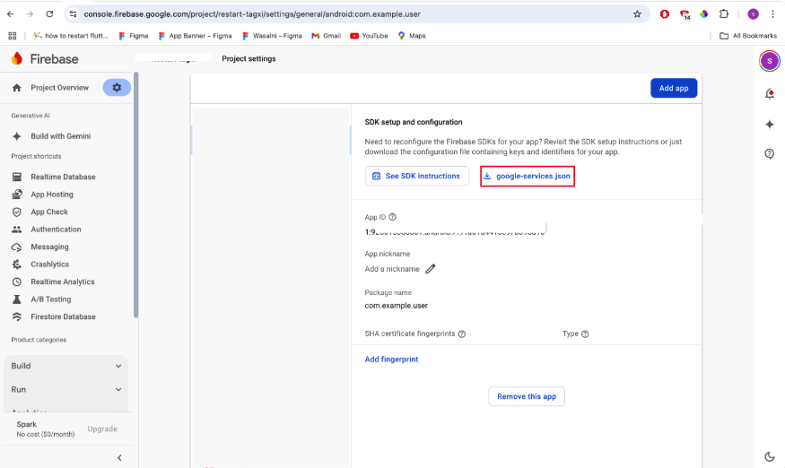
6.1.0 Flutter Project Setup:
Open your Flutter project in your preferred editor.
Navigate to the android/app directory for Android or ios/Runner directory
for iOS, and paste the google-services.json (for Android) or
GoogleService-Info.plist (for iOS) file that you downloaded earlier.
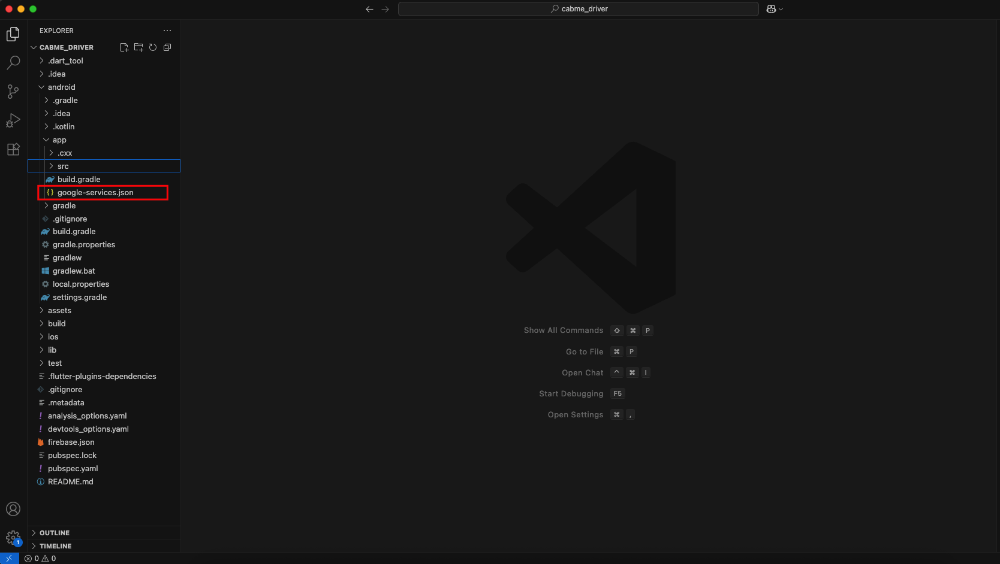
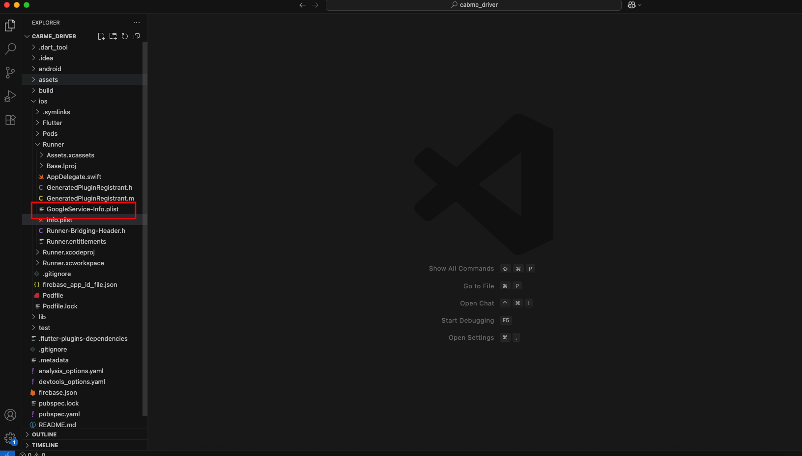
6.1.1 Add Firebase SDK to Your Flutter Project:
Open your Flutter project's pubspec.yaml file.
Add the following dependencies:
dependencies: flutter: sdk: flutter firebase_core: latest_version firebase_auth: latest_version # (if you need Firebase Authentication) cloud_firestore: latest_version # (if you need Cloud Firestore) # Add other Firebase plugins as needed
latest_version with the latest version numbers of the Firebase plugins you
want to use. You can find the latest versions on pub.dev.6.1.2 Using Firebase Services:
You can now use Firebase services in your Flutter app. Import the necessary Firebase packages and follow the respective documentation for each service you want to use (e.g., Firebase Authentication, Cloud Firestore).
6.1.3 Testing:
Run your Flutter app on a device or emulator to verify that Firebase services are correctly integrated and working.
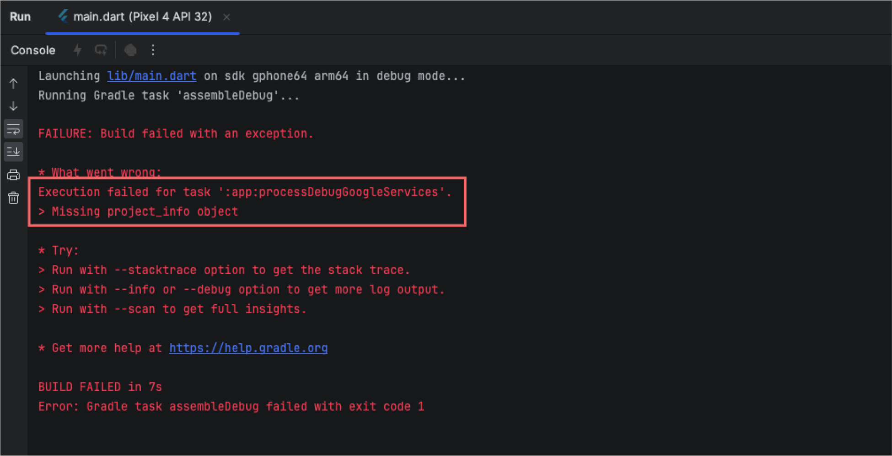
The error message you’re encountering, “Missing project_info object,” typically arises in Flutter projects when there’s a misconfiguration or missing information related to Firebase services. Here’s how you can troubleshoot and potentially resolve this issue.
google-services.json: If you’re using Firebase services in your Flutter app,
ensure that you have the google-services.json file placed in the correct location
within your Android project. This file contains important configuration information for Firebase
services. It should be located in the android/app directory of your Flutter
project.google-services.json file to your
Android project, and configuring Firebase services in your Flutter app’s code (if applicable).
android/build.gradle file accordingly.google-services.json file or modifying the Gradle build files, make
sure to sync your Gradle files in Android Studio. This can be done by clicking on the “Sync
Project with Gradle Files” button.flutter clean followed by
flutter pub get and then rebuilding the project (flutter run or
flutter build).GoRide | InDriver Clone | Flutter Complete Taxi Booking Solution with Bidding Option
GoRide is an advanced and scalable taxi booking application designed with secure, modern technologies:
To run GoRide smoothly, your server must meet the following minimum requirements:
2.1 : Prerequisites
2.2. APIs & External Services
3.1 : Go to firebase console through this link: https://firebase.google.com
3.2 : Click on “Go to console” in the top right corner.
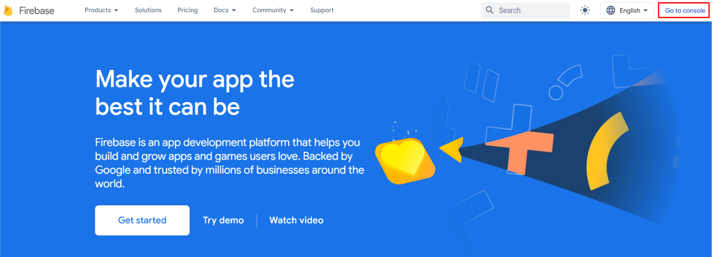
3.3 : Click on “Add project”, it will redirect you to the new project creation page Enter your project name and click on “Continue” again click on “Continue” after that select “Default Account fo firebase” and then click on “Create Project”
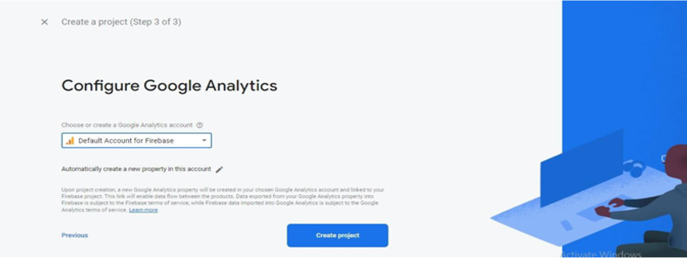
3.4 : After successfully creating a new project, you will be directed to the overview page. From there, simply navigate to the icons link to proceed further.
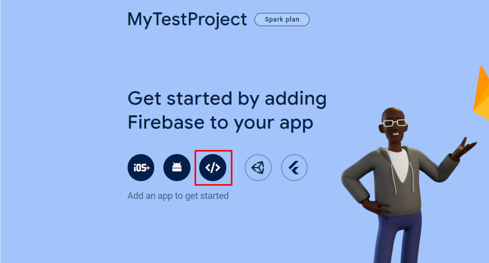
Upon redirection, you’ll land on the ‘Add Firebase to your web app’ page. Here, input your app’s nickname and proceed by clicking ‘Register app’. Afterward, scroll down to find detailed information as outlined below.
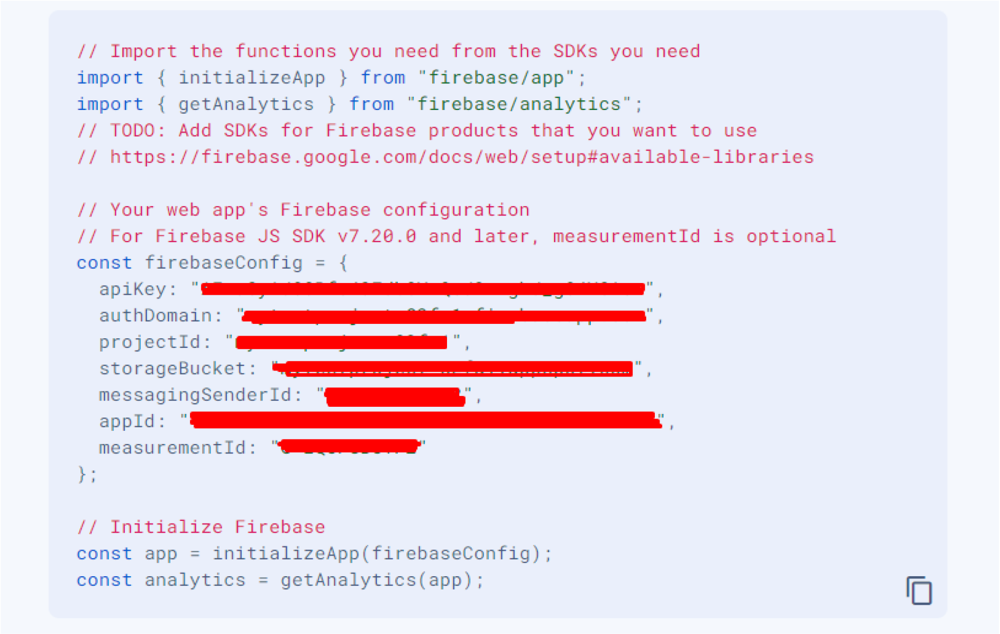
All of these details will be incorporated into both the app and admin panel documentation for comprehensive reference and seamless integration.
3.5 : Next, navigate to ‘Firestore Database’ in the left sidebar. Select your project name from the drop-down menu, and then proceed by clicking on ‘Create database’.
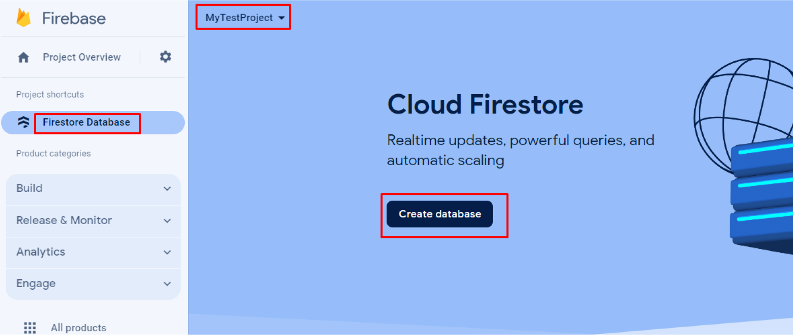
3.6 : Choose your preferred option and click on the ‘Next’ button. Subsequently, proceed by clicking on “Enable”
3.7 : Following that, locate “Realtime Database” in the left sidebar. Select your project name from the drop-down menu, and proceed by clicking on “Create Database”
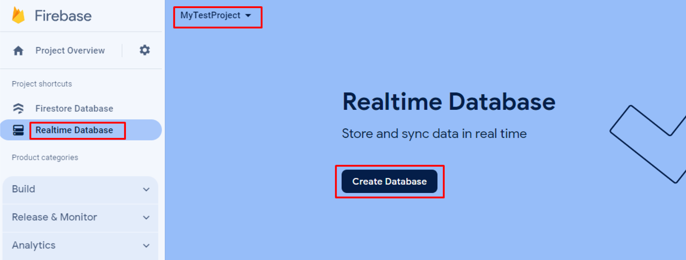
3.8 : Choose your preferred option and proceed by clicking the “Next” button, then click on “Enable” to activate the selected feature.
3.9 : Firstore Database Rules Update.
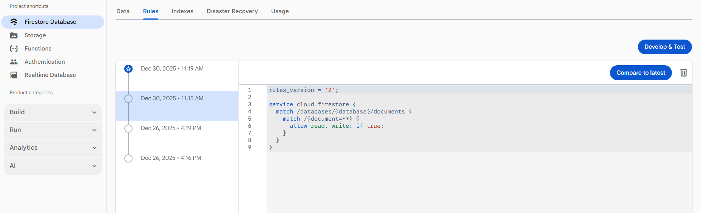
Please update the following rules in your firestore database.
rules_version = '2';
service cloud.firestore {
match /databases/{database}/documents {
match /{document=**} {
allow read, write: if true;
}
}
}
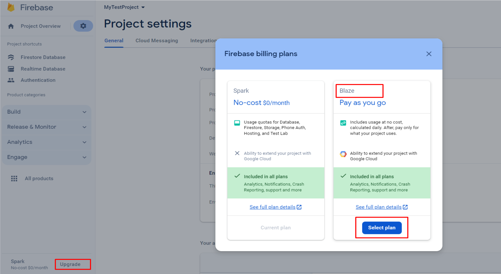
Ensure that your server meets the requirements outlined in the documentation's Server Requirement section. Upon downloading the code, upload the admin zip file to your server and extract it. The admin panel can be installed on either a domain or a subdomain.
Follow these instructions to connect to your server using FTP and complete the application setup:
4.1.1. Connect to the server using FTP: Use an FTP client like FileZilla to connect to your server. Enter the server's IP address, username, and password. Use port 21 for FTP or port 22 for SFTP.
4.1.2. Transfer the ZIP file: Upload your admin panel’s ZIP file to the server’s local path (e.g., /var/www/html).
4.1.3. Unzip the file: Navigate to the file's location on the server and run the following command to extract the ZIP file: "sudo unzip your-application.zip" or you can do it from cpanel directly.
4.1.4. Update the .env file with your configuration: Modify the database and application settings which are mentioned in the .env file. Below is an example configuration:
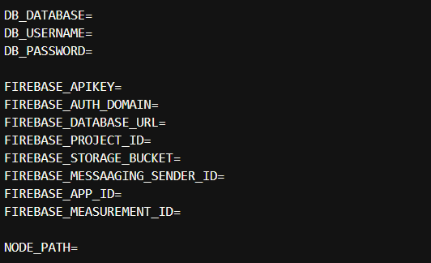
4.1.5. Run the following command from the root directory of your admin panel terminal to install Firebase dependency modules required for scheduler functions.
npm install
4.1.6. Setup Node Js Path
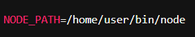
To get the Node path from the terminal, you typically want to determine the location of Node.js or a specific file related to Node. Here are common ways to do this from the terminal:
To find out where Node.js is installed on your system, you can use the which command (on Linux/macOS):
which node
This will return the full path to the Node.js binary. For example:
/usr/local/bin/node
See this example: In our case, the Node.js path is something like the one below.
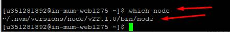
Copy this path and update it in your NODE_PATH variable.
A cron job is a scheduled task in Unix-based operating systems that runs scripts or commands at specified intervals. Here's how to set up a cron job on a server:
Steps to Set Up a Cron Job:
4.2.1. Log in to cPanel or in your web server
4.2.2. Navigate to the "Cron Jobs" Section
4.2.3. Add a New Cron Job
In the command field, enter the command or the path to the script you want to run.
For example: Run a script every minutes:
* * * * * /usr/local/bin/php /home/username/public_html/artisan schedule:run >> /dev/null 2>&1
For example: Run a script every day at midnight:
0 0 * * * /usr/local/bin/php /home/username/public_html/artisan schedule:run >> /dev/null 2>&1
4.2.4: Save the Cron Job
Please Note: Ensure the script you’re running has the correct permissions and is executable. You need to specify the correct PHP path (/usr/local/bin/php is common but may vary depending on your server setup) and please use your admin panel path in the CRON JOB command.
Please choose your preferred map by navigating to the Admin Panel > General Settings > Map Tracking Options.
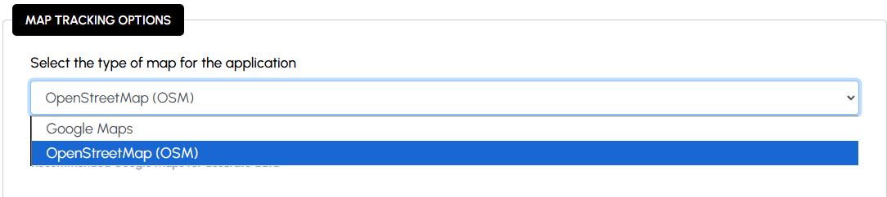
Note: Recommended Google Map for accurate location and mapping results.
To work firebase push notification feature functions correctly, please upload your Firebase credentials file in the Admin Panel by navigating to General Settings > Notifications Settings.
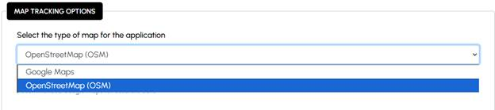
Navigate to your Firebase Project Settings > Cloud Messaging. Under Firebase Cloud Messaging API, you will find the Sender ID.
Go to Firebase Project Settings > Service accounts, scroll down and click on the 'Generate new private key' button. A JSON file will be downloaded.
Steps to Configure:
To enable real-time push notifications for customers and drivers, you need to connect your application with Firebase Cloud Messaging (FCM).
Default Admin User Credentials
URL: Your desired URL where the admin panel is set up.
Email: admin@goride.com
Password: 12345678
To perform Firebase Collection Import Export, follow these straightforward steps:
6.1 : To set up NPM on your computer, download Node.js from the following link:https://nodejs.org/en/download/
6.2 : Unzip the source code file named "Firebase Import Export Collections.zip"
6.3 : If you haven't already created a Firebase project, set it up now.
6.4 : Configure the credentials.json file, which you can obtain from your Firebase Project settings. Then navigate to the Service account, then select Node.js. Generate a new private key and wait until the key is created. It will automatically download and replace the current credentials.json file.
6.5 : Navigate to the extracted Firebase Import Export Collections zip file path and then press and hold the Ctrl+Shift buttons. While holding them, right-click the mouse button, and select "Open PowerShell window here" from the context menu. This will open a PowerShell window where you can run the import/export command.
6.6 : Execute the following commands to perform import/export operations for collections:
To import all collections, execute the following command:
npx -p node-firestore-import-export firestore-import -a credentials.json -b collections.json
To export all collections, execute the following command:
npx -p node-firestore-import-export firestore-export -a credentials.json -b collections.json
Once the export command is executed, the collections.json file will be downloaded.
Please Note: Prior to executing the above command, ensure that you have correctly updated your Firebase credentials in the credentials.json file.
All the necessary Firebase Functions have been initially coded by us, you just need to deploy these functions to your own Firebase account. This means that you need to upload the source code inside the Firebase Functions folder to your account. If a Firebase account has been created, find a Firebase project, and 2 apps (iOS and Android)
For comprehensive guidance, refer to the official Firebase documentation on getting started: "Write, test, and deploy your first functions" in Cloud Functions for Firebase.
You'll need Node.js and the Firebase CLI to write functions and deploy them to Cloud Functions.
To set up NPM on your computer, download Node.js from the following link: Node.js download. Once Node.js is installed, proceed to install the Firebase CLI.
Use the following command to install the CLI via npm:
npm install -g firebase-tools
If you've already set up the Firebase tools, you can simply run the following command:
npm install
These steps will ensure you're ready to start writing and deploying functions with Firebase. If you encounter any issues, consult the Firebase documentation for troubleshooting assistance.
To initialize the project, authenticate the Firebase tool by running the following command. You'll be prompted to log in to your account via your web browser:
firebase login
Since we're providing the complete source code for your Firebase Cloud Functions:
Extract the zip file Firebase Cloud Functions.zip.
Fill in the necessary credentials in the following files located within the zip:
1. firebaserc (Add your Firestore Project ID)
2. index.js (Add your Firestore database URL)
3. serviceAccountKey.json (Add your Firebase service account credentials)
With these steps, you've successfully set up the required credentials.
Simply run the following command in the Firebase Cloud Functions > functions directory.
firebase deploy --only functions
Now you can go to your Firebase Console and check, as the functions have been deployed. It is possible to see the logs for each function, understand the output, and know when it gets called.
To perform Firebase indexing, follow these straightforward steps:
8.1 : To set up NPM on your computer, download Node.js from the following link:https://nodejs.org/en/download/
8.2 Unzip the source code file named "Firebase Indexing.zip" here.
8.3 Navigate to the extracted directory of "Firebase Indexing" zip file. Press and hold the ctrl+shift buttons, then right-click the mouse button. From the context menu, select "Open PowerShell window here" to launch Windows PowerShell and execute import/export commands.
8.4 Execute the command firebase login to log in to Firebase, if you haven't already done so.
8.5 Execute the command firebase init
8.6 Proceed with Y and press the enter button.
8.7 Choose the Option > Firestore: Configure security rules and index files for Firestore.
Please Note: Choose the arrow down key to navigate and select options, and press the space button to confirm your selection.
8.8 Choose the Option > Use an existing project
8.9 Choose your project
8.10 Press Enter > ? What file should be used for Firestore Rules? firestore.rules
8.11 Press Enter > ? What file should be used for Firestore indexes? (firestore.indexes.json)
8.12 ow, the firestore.indexes.json file will be downloaded. Open this file and copy all the code from firestore_indexes.json file, then paste it into firestore.indexes.json file.
8.13 Now execute the command firebase deploy --only firestore:indexes to import indexing in firestore.
Follow these instructions to connect to your server using FTP and complete the application setup:
9.1.1. Connect to the server using FTP: Use an FTP client like FileZilla to connect to your server. Enter the server's IP address, username, and password. Use port 21 for FTP or port 22 for SFTP.
9.1.2. Transfer the ZIP file: Upload your owner panel’s ZIP file to the server’s local path (e.g., /var/www/html).
9.1.3. Unzip the file: Navigate to the file's location on the server and run the following command to extract the ZIP file: "sudo unzip your-application.zip" or you can do it from cpanel directly.
9.1.4. Update the .env file with your configuration Modify the database and application settings which are mentioned in the .env file. Below is an example configuration:
Note: Add Your Google Client ID for Google Login Functionality To enable Google login, you need to provide your Google Client ID.
Steps to find your Google Client ID:
Steps to Check/Add Authorized Domains for OAuth 2.0 Client ID
Now you can access your owner panel at your desired domain For ex: https://owner.yourdomain.com/
9.2.1. Dashboard
Provides an at-a-glance overview of the owner’s business operations. Displays analytics such as total drivers, active rides, completed rides, ongoing rides, latest bookings, top-performing drivers, and overall earnings summary. Helps owners quickly monitor performance, track fleet efficiency, and make informed operational decisions.
9.2.2. Document Verification
Document Verification allows owners to securely upload and submit required documentation for approval. This can include identity proof, business licenses, vehicle registration, and other necessary certificates. The system ensures that all submitted documents are verified before activating the owner’s account, helping maintain compliance, safety, and trust on the platform.
9.2.3. Drivers
The Drivers menu allows owners to manage all drivers in their fleet. It includes adding new drivers, viewing driver profiles, tracking ride assignments, and monitoring performance metrics. This helps owners efficiently allocate drivers, oversee ongoing operations, and ensure smooth service delivery across all bookings.
9.2.4. Ride Orders
The Ride Orders section provides owners with a detailed view of all rides booked under their fleet. It displays booking details, rider information, assigned driver, trip status, fare breakdown, and payment method. This helps owners track active, completed, and cancelled rides, monitor fleet performance, and ensure timely service delivery..
9.2.5. Intercity Orders
The Intercity Orders section provides owners with a comprehensive view of all outstation trips under their fleet. It includes booking details, passenger information, selected service type (Freight, Parcel, Private Ride, or Shared Ride), assigned driver, trip status, fare breakdown, and payment method. This helps owners monitor ongoing, completed, and cancelled intercity rides, optimize long-distance operations, and ensure reliable service for passengers.
9.2.6. My Subscriptions
The My Subscriptions section allows owners to view and manage their active subscription plans on the platform. It displays details such as subscription type, start and expiry dates, features included, payment history, and renewal options. This helps owners keep track of their plan benefits, ensure uninterrupted access to platform services, and manage upgrades or renewals efficiently.
9.2.7. Change Subscription
The Change Subscription feature allows owners to upgrade, downgrade, or switch their current subscription plan. It provides details of available plans, pricing, features, and renewal options. This helps owners select the most suitable plan for their business needs, ensuring access to desired features and optimal platform usage.
9.2.8. My Wallet Transactions
The My Wallet Transactions section provides owners with a detailed record of all wallet activities. It includes credits, debits, payouts, refunds, and adjustments related to their account. This helps owners track financial activity, monitor earnings, reconcile transactions, and maintain transparency in platform-related finances.
9.2.9. Payouts
The Payouts section allows owners to view and manage withdrawal requests from their platform wallet. It displays details such as requested amount, request date, payment method, and status of the payout. This helps owners track earnings, ensure timely withdrawals, and maintain clear financial records for their business.
Follow these instructions to connect to your server using FTP and complete the application setup:
10.1.1. Connect to the server using FTP: Use an FTP client like FileZilla to connect to your server. Enter the server's IP address, username, and password. Use port 21 for FTP or port 22 for SFTP.
10.1.2. Transfer the ZIP file: Upload your landing panel’s ZIP file to the server’s local path (e.g., /var/www/html).
10.1.3. Unzip the file: Navigate to the file's location on the server and run the following command to extract the ZIP file: "sudo unzip your-application.zip" or you can do it from cpanel directly
10.1.4. Update the .env file with your configuration: Modify the database and application settings which are mentioned in the .env file. Below is an example configuration:
Notes: Please use the same Firebase credentials for the owner and landing panel setup that you will also add in the .env file for the admin panel setup
Now you can access your landing page at your desired domain For ex: http://landing.yourdomain.com/
11.1. Go to the Google Maps Platform
11.2. Click the Get Started button in the middle of the screen.
11.3. Click on the Google Cloud Platform home in the upper left corner.
11.4. Click on Billing to make sure your billing details are up-to-date. If they are not, your Google Maps will not work properly.
11.5. Once you’ve confirmed your billing is up-to-date, click on the Google Cloud Platform home in the upper left corner again.
11.6. Hover to APIs & Services and go to Credentials.
11.7. If you want to use an existing project, please select it from the list. Otherwise, select ‘Create a new project’ and enter a project name.
11.8. Click Create credentials and select API key. You will see a new dialog that displays the newly created API key.
11.9. Click the Close button in the API key dialogue. Your new API key will be listed on the Credentials page under API keys
To update the admin panel just upload our latest source code zip file in your project root folder and extract it.
If you customized something on the code and want to update to our latest version then you can follow any one option from following this.
12.1. First push your code on a git branch then download our latest version source code from codecanyon and push it to another branch. And then you can merge the changes between current version and previous version code and merge both branches and it is possible to get conflicts on branches.
12.2. Download the our latest version source code from codecanyon and apply.